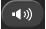
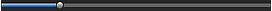
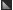

You can capture video frames and create still images in these windows.
In the Movie Print window, you can print the captured still images.
 Important
ImportantThis function is supported under Mac OS X v.10.4.11 or later equipped with an Intel processor.
This function is not available when ImageBrowser Ver.6.5 or later (supplied with Canon digital cameras supporting MOV format video recording) is not installed.
When the color tone of a video is changed via the settings of the graphic driver (video card) or its utility, such a change is not reflected in still images captured from the video. Therefore, color tones may differ between videos and captured still images.
To display the Video Frame Capture window, click (Capture frames from video) in the Select Images screen or Add Image dialog. To display the Add Image dialog, select the page you want to add images to in the Edit screen, then click (Add Image).
To display the Movie Print window, select Photo Print in Solution Menu EX and click the Movie Print icon.
 Note
NoteThe Movie Print window displayed via Solution Menu EX is used as an example in the following descriptions. The window displayed varies depending on how Easy-PhotoPrint EX is started.
(1) Settings and Operation Buttons Area
(2) Preview Area
You can print the captured still images.
NoteThis function is available only when the Movie Print window is displayed via Solution Menu EX.
Media Type
Displays the media type specified in the Print Settings dialog.
Page Size
Displays the paper size specified in the Print Settings dialog.
Print Settings
Displays the Print Settings dialog in which you can make the basic print settings (select printer/media, etc.).
Starts printing the still images selected in the Captured frame(s) area.
You can capture multiple still images according to the settings.
NoteUse (Down arrow/Up arrow) to show/hide the Auto Frame Capture Settings area.
Start time/End time
Displays the start/end time of the time range from which to capture still images.
Total captures
Displays the number of still images to be captured.
Capture Method
Select from All frames, frame(s), sec. int. and frame int..
Capture
Captures still images according to the settings.
You can capture up to 150 frames at a time from one video.
Select Video
Displays the Select Video dialog.
Select a folder, then select the video from which you want to capture still images.
Save
Saves the still images selected in the Captured frame(s) area.
Exit
Click to close the Video Frame Capture/Movie Print window.
The video selected in the Select Video dialog appears in Preview.
(Frame backward/Frame advance)
Click to reverse/advance one frame and pause.
You can also click during playback to reverse/advance one frame and pause.
(Playback/Pause)
Plays or pauses the video.
(Pause) appears while a video plays, and (Playback) appears while a video is stopped.
(Stop)
Stops the video.
(Capture)
Captures the current frame and displays the still image in the Captured frame(s) area.
You can also capture during playback.
 (Mute/Clear mute)
Switches audio OFF/ON.
 Playback Slider
Displays the video playback progress.
Current playback time is displayed to the left of the slider.
(Set start time/Set end time)
Set the start/end time of the time range from which to capture still images automatically.
NoteThese buttons are displayed only when the Auto Frame Capture Settings area is displayed.
Time Range Slider
Displays the time range set with (Set start time/Set end time).
You can also set the start/end time by moving  (Start/End point) located below the slider.
NoteThis slider is displayed only when the Auto Frame Capture Settings area is displayed.
Displays the thumbnails of the captured still images.
Double-click a thumbnail image to display the Zoom In window in which you can check the details of the image.
(Select all frames)
Selects all the images displayed in the Captured frame(s) area.
When you select an image, a checkmark appears in its checkbox.
(Clear all check-marks)
Cancels all image selections in the Captured frame(s) area.
(Correct image)
Displays the Correct Captured Frames window in which you can correct all the images selected in the Captured frame(s) area.
NoteWhen a frame in which the subject or camera has moved significantly is captured, the image may not be corrected properly.
Noise Reduction
Reduces noise (tonal variation that may appear in images taken in dark locations such as night scenes using a digital camera).
Enhance resolutions
Select this checkbox to reduce the jaggies (roughness) in images.
Apply to all frames
Select this checkbox to correct all the images displayed in the thumbnail list.
OK
Applies Noise Reduction to the selected images or all images. Noise will be reduced to make the images more vivid.
NoteCorrection may take time depending on your environment.
When the Enhance resolutions checkbox is selected, Noise Reduction and Enhance resolutions are applied simultaneously.
Reset Selected Frames
Cancels all corrections applied to the selected images.
Exit
Closes the Correct Captured Frames window and returns to the Video Frame Capture or Movie Print window.
Source images will be overwritten by the corrected ones.
(Reduce/Enlarge frame)
Reduces or enlarges the displayed image.
(Whole frame)
Displays the entire image in Preview.
(Compare)
Displays the Compare Captured Frames window. You can compare the images before and after the correction side by side.
The image before the correction is displayed on the left, and the image after the correction is displayed on the right of the window.
Sort by Time
Displays the captured still images in the order of the time code.
NoteRefer to "Creating Still Images from Videos" for details on how to create still images from videos.